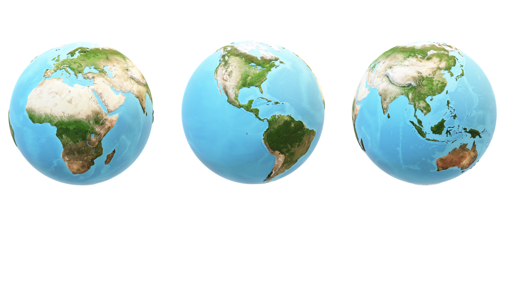
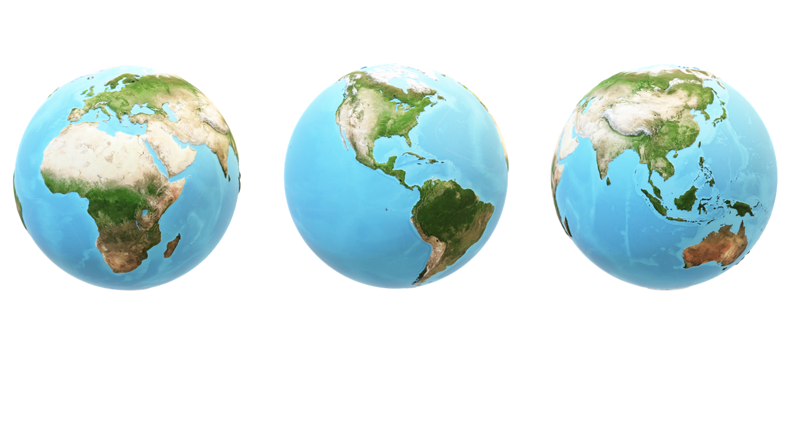

El juego del globo
| Cada grupo fabricará un elipsoide con un globo y rotulador |
Servirá de guía para pintar los continentes las siguientes figuras:

| Cada grupo fabricará un elipsoide con un globo y rotulador |
Servirá de guía para pintar los continentes las siguientes figuras:

Obra publicada con Licencia Creative Commons Reconocimiento Compartir igual 4.0